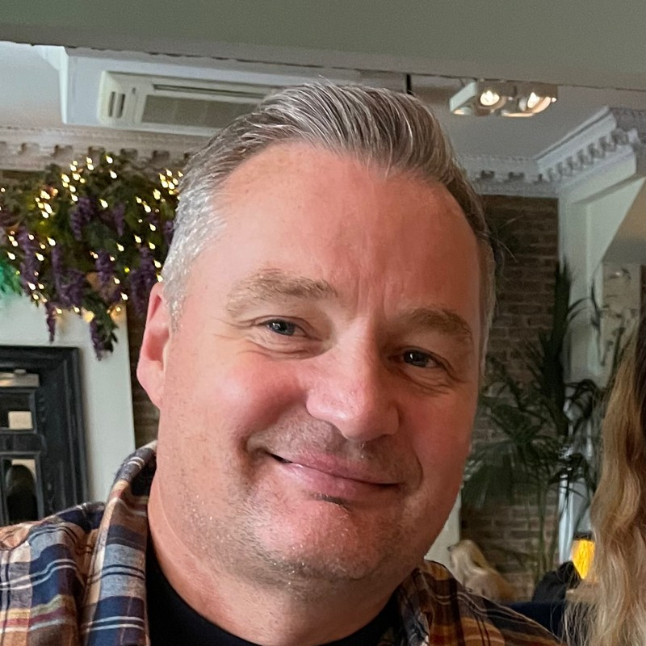

About Me
I completed my MSc in Artificial Intelligence at the University of Edinburgh, and my BE in Electronics and Communication Engineering at Anna University.
I joined ZOT in February 2025 as a Software Application Engineer intern, and I have since been promoted to Software Engineer. Over a little more than a year and a half, it has been a continuous learning experience: getting to know the business from the ground up, from the work of an operator on the floor through to the priorities of the managing director, and collaborating with knowledgeable colleagues at every level. By combining their deep manufacturing expertise with what I bring on the technology side, we have been able to build and transform the way the business works from within.
I focus on understanding how people actually work, and on designing technology that fits naturally around them, so that the tools genuinely support the team and add lasting value to the business.

Architecting the platform
As the company's first software engineer, I built the platform before the products: I sat with colleagues across every division to understand how the industry and the company actually worked, chose the right technology stack, and architected a production-grade framework that tied it all together. It came together in three deliberate phases.
From the shop floor to production
How a request moves from an idea to production, and back again.
Governance, security and spending discipline
Quantified business results
Vortex, the customer portal
Our Vortex portal is a unique solution on a national scale, allowing our customers to track every process involved in manufacturing their orders.
Wider influence
Hosting the next generation
We regularly host students from the University of Edinburgh, Edinburgh Napier and Heriot-Watt on the shop floor, walking them through our transition into Industry 4.0 with complete traceability from order to dispatch, and the opportunity a fresh graduate can find in manufacturing.
Bringing AI into everyday work
I lead a company-wide initiative to bring AI into day-to-day work, running sessions for managers, engineers, HR and the board that walk through what the tools can do and how to put AI agents to work effectively. The focus is practical and honest: using AI securely, protecting sensitive data, and knowing where it saves real time versus where human judgement stays in charge, so every function can adopt it with confidence.
Published as a case study
My placement was published by the Midlothian and East Lothian Chamber of Commerce, now used to make the case for taking on technical interns in manufacturing.
Learning beyond the business
ZOT encouraged me to attend research conferences and technical meetups, where I could learn directly from engineers with far more experience than me.
In their words
Across the shop floor, marketing, HR and engineering. Click any statement to read it in full.
“Vaikunth has fundamentally changed the way we use technology and data across our business … an exceptional talent whose technical ability is matched by his drive to improve what we do.”
“Vaikunth has made a significant impact at Zot Engineering and has fundamentally changed the way we use technology and data across our business.
He has developed live dashboards covering all areas of the company, giving us real-time visibility of key performance indicators across production, finance, environmental performance and wider operations. Information that previously required significant time and manual effort to gather and review is now readily available, allowing us to identify issues earlier and make faster, better-informed decisions.
He has also developed digital route cards that will significantly reduce paper consumption across the business, alongside a range of bespoke systems designed to improve specific operational areas and remove inefficient manual processes.
Vaikunth’s contribution also extends directly to our customers. He completely redesigned our company website and developed a customer portal that has transformed the way we share information. Customers now have clear visibility of open orders, delivery performance, OTD and quality data, improving transparency, communication and the overall customer experience.
What stands out most is that Vaikunth has not simply developed software. He has taken the time to understand our manufacturing operations, identify where technology can make a genuine difference and turn those opportunities into practical solutions that are now embedded within the business.
His technical ability is matched by his enthusiasm, initiative and constant drive to improve what we do. Vaikunth is an exceptional talent and a great example of the capability we have within Zot. It is a genuine pleasure to have him as part of our team.”William Paterson Director, ZOT
“A fantastic ‘can do’ attitude, working quickly and efficiently to solve problems … showing creativity and initiative to find solutions.”
“From day one he has demonstrated his eagerness to learn, strong problem solving skills, and ability to learn and adapt to new challenges. A fantastic ‘can do’ attitude, working quickly and efficiently to solve problems and handle task given to him, showing creativity and initiative to find solutions.”

Gordon Falconer Former Managing Director, ZOT